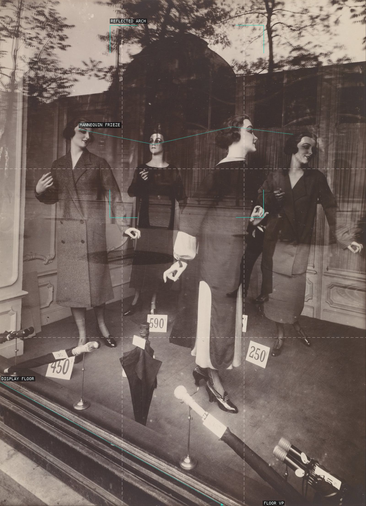
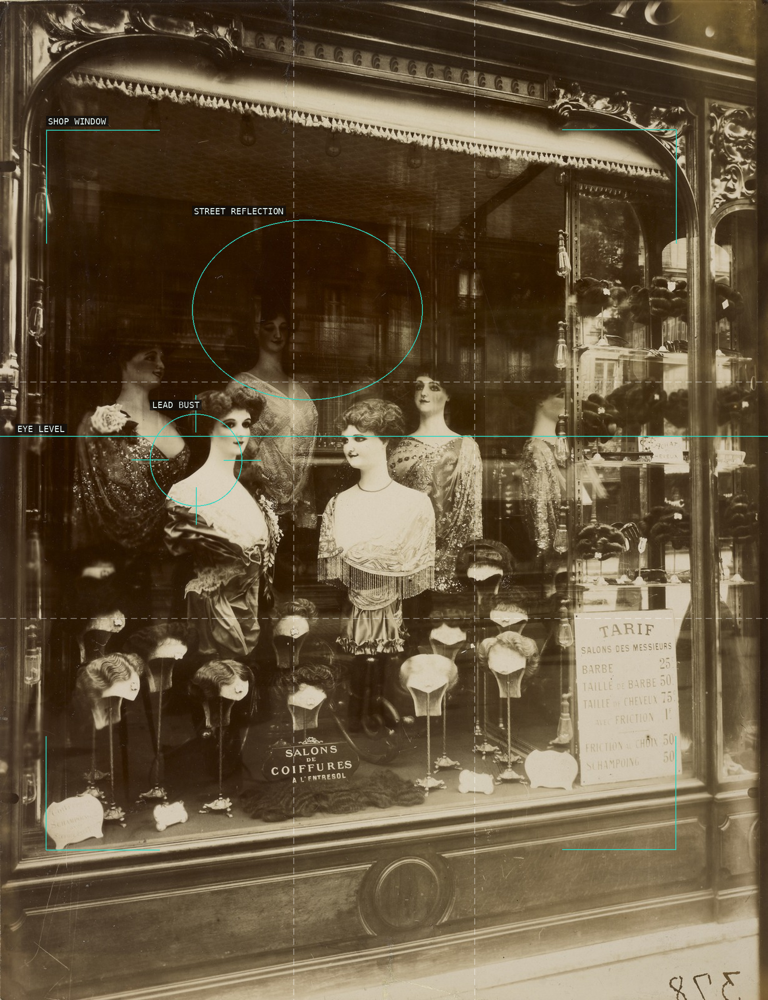
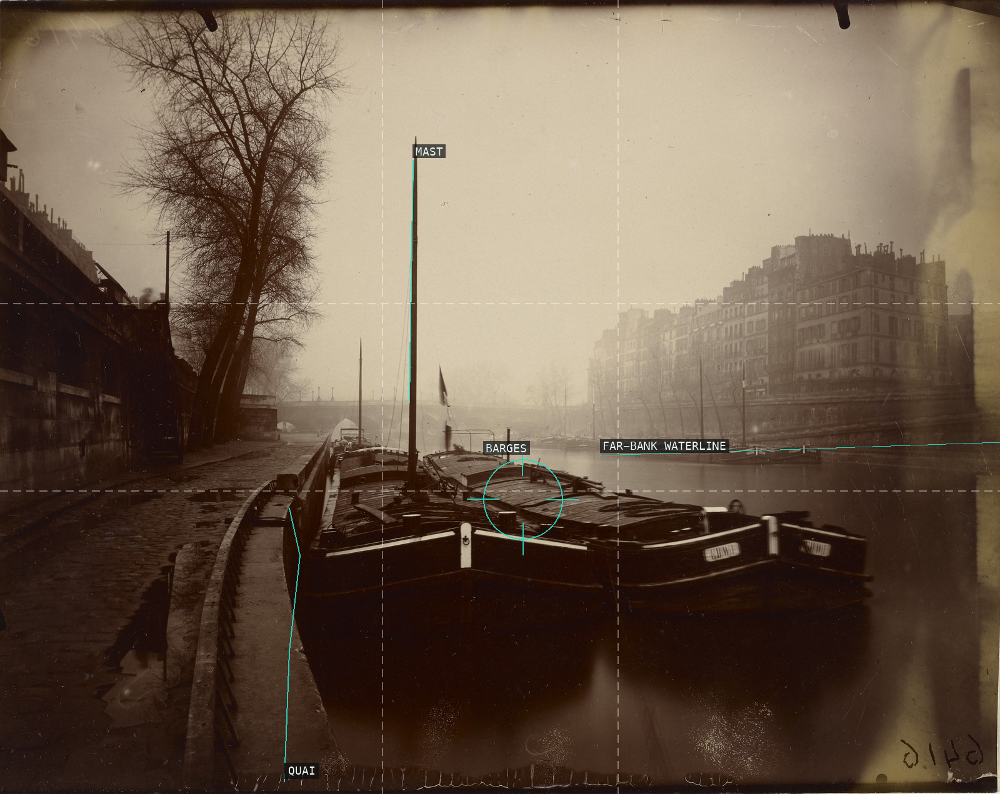
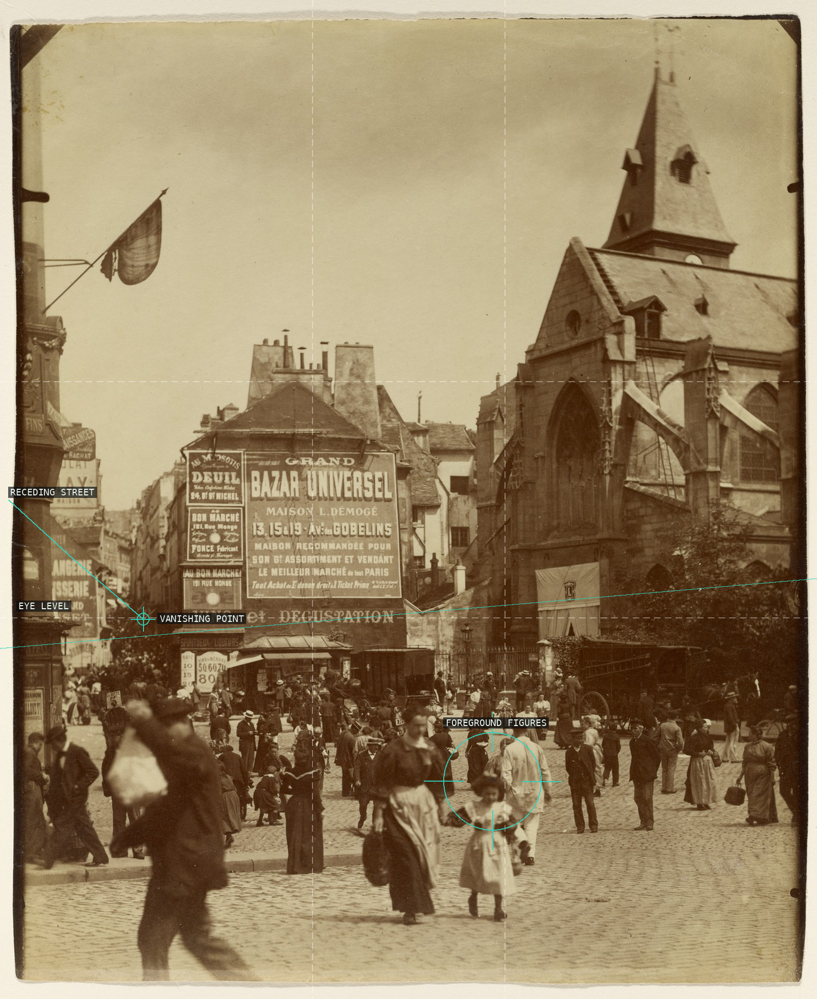
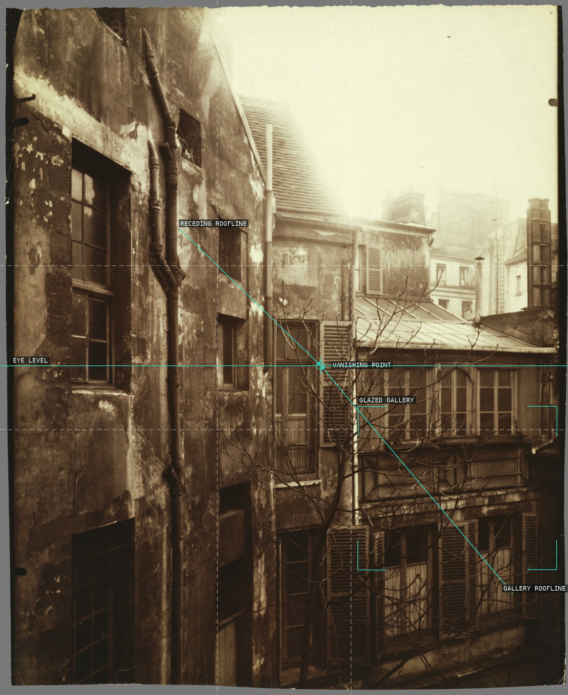
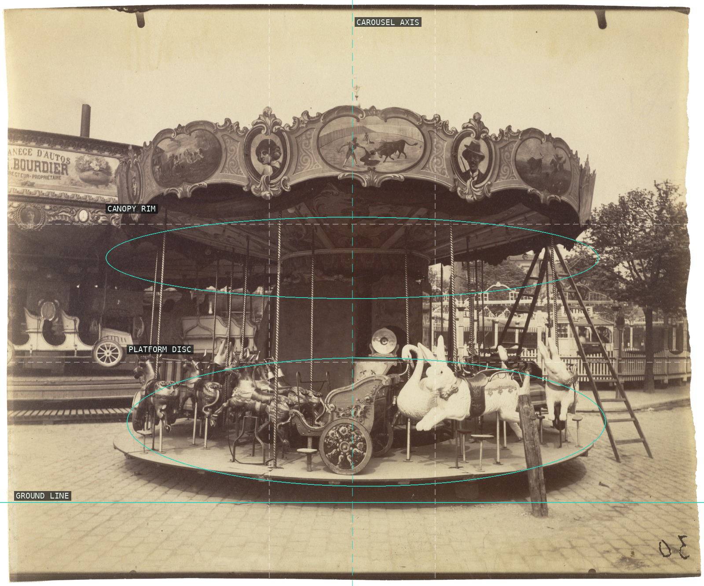
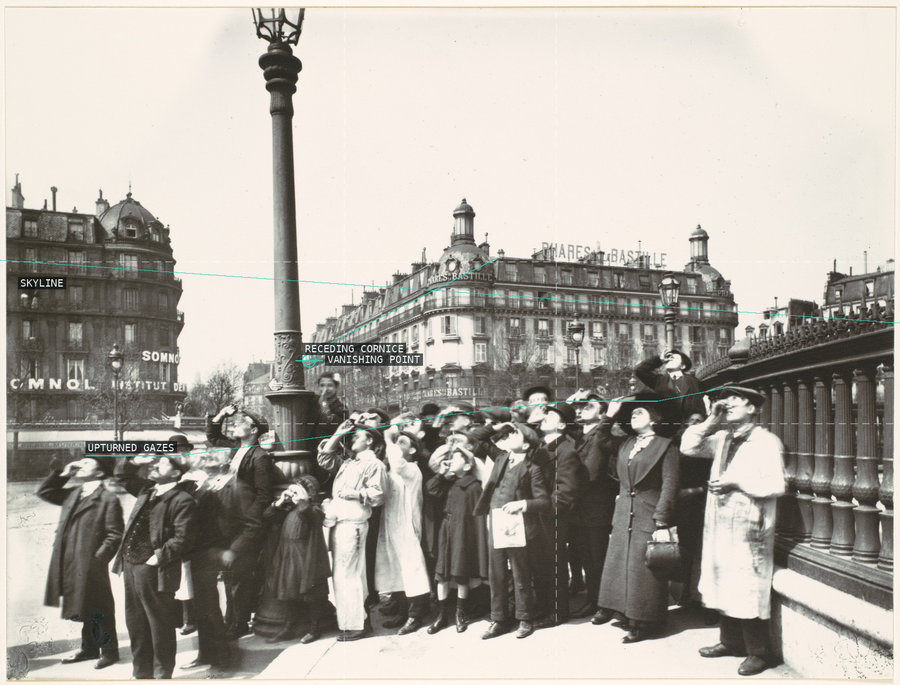

Atget's vitrine collapses three planes: a frieze of four mannequin heads over a ghostly reflected arch, above a display floor whose perspective drives to a vanishing point below the frame.

A narrow cobbled alley plunges to a luminous vaulted passage: the central gutter runs the eye up to a vanishing point at the passage mouth, while two children watch, unnoticed, from a high window. (Scan mis-titled at source; presented descriptively.)

Atget stages the coiffeur's vitrine as a proscenium: a frieze of uncanny mannequin busts stares out at eye level while the Paris street ghosts across the glass.

A deserted quay staged as deep space: moored barges recede toward the distant bridge, the far bank dissolving in fog across the water, the lone mast a vertical caesura against a near left-right mirror.

A market square opens onto the rue Mouffetard receding left to a vanishing point beyond the billboard block; a tilted eye-level line runs downhill as the square did, the sunlit foreground crowd holding the human scale between billboard wall and church.

An empty courtyard read as one-point perspective: the receding rooflines to left and right funnel to a sixteen-line vanishing point that sits dead on the eye-level line, the multi-paned glazed gallery boxed at right.

The straight upper rail recedes to a fourteen-line convergence, then hands off at the landing to the curving wrought-iron banister that sweeps down to the newel -- an empty stage set framed by the stone-arched doorway.

A radial burst: the trunk descends the vertical spine to a root crown from which the roots sprawl outward across the frame.

A ruined ivy-clad balustrade recedes right past a massive stone plinth, braced by the vertical ivy trunk under backlit winter trees — Atget's decayed formal garden as an empty stage set.

A radially symmetric carousel shot frontally: the central axis and the two concentric ellipses of canopy rim and platform disc build the mirror geometry, the empty cobbled foreground leaving it a deserted fairground stage.

Frontal doorway portrait: the dark opening presses three women into a shallow stage, their faces running in a horizontal row across the upper third while the seam of the crumbling stone base grounds the frame.

A frieze of upturned faces below Atget's empty Paris stage; the corner building's cornice recedes to a one-point vanishing point under the skyline.